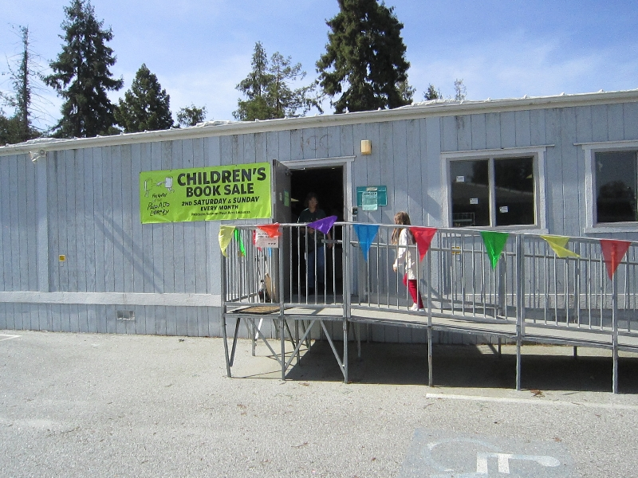

We have over 50,000 wonderful used books, records, videos, magazines, and more at our monthly sale. These are mostly from donations from individuals, estates, and companies. We also sell items that the Palo Alto library has removed from their shelves to make room for new purchases.
General Information
- We hand out a maximum of two numbered tickets per person at the Main Room, beginning at 8 am on the Saturday of the sale. If you receive a ticket, the number on it reserves your corresponding place in the line, allowing you to go off and get coffee or to visit the Children's and Bargain Book rooms. Please be sure to return to the Main Room a few minutes before it opens to reclaim your part of the line. Because of our severe space limitations and compelling issues of health and safety, we will only allow 160 customers into the Main Room at a time. On Saturdays, customers will be originally admitted in the order of their numbered tickets that are given out from 8 to 11 am.
- Once inside the main room, customers may take only 12 books off of shelves, after which they should purchase these and exit via the east door. They may then join at the end of any remaining line at the north door and reenter in that order. The limitation of 12 books at a time will continue past noon if a line remains outside.
- Please note that the Children's and Bargain Rooms open one hour earlier than the Main Room on Saturday.
- In the Children's Room during the first hour of the sale on Saturday, please select no more than 12 books at a time, and bring them to the cashiers to hold until you are ready to pay for all your purchases
- Please bring your large book donations to the Main Sale Room.
- You can also purchase gift certificates at the sale in $5 denominations.
Details
- Main Sale Room
- Types of Items: Miscellaneous items
- Location: Along the north driveway, adjacent to the Charleston Shopping Center (See map below)
- Price: Hardbound books start at $1 each, and paperback books start at 50 cents each
Map to Main Sale Room.
Map data ©2019 Google - Children's books, music, videos, and toys
- Types of Items: Picture books, school age fiction and nonfiction, non-English language books, CDs and DVDs, and books for parents and teachers
- Location: New room (near the Cubberley track, Pavilion and the Greendell School)
- Price: Many items are 50 cents or $1

Entrance to the Children's Room book sale.
Photo by Friends of the Palo Alto Library © 2016-2019 - Bargain books
- Types of Items: Bargain books
- Location: Rooms K6 and K7
- Price: Hardbound books are all $1, paperbacks are 50 cents each, and children's books are 25 cents. On Sunday, prices in the bargain room are half-off. Additionally, you can purchase grocery bags for $5 each and fill these with books.
Patrons browsing in the Bargain Room.
Photo by Friends of Palo Alto Library © 2016-2019
You'll find these same low prices on all the other tens of thousands of books that we have. While some booksellers may pledge a portion of your purchase to help local libraries, we give 100% of the proceeds to our local libraries. Plus, we charge no sales tax and we have the friendliest sales people you’ll ever find.